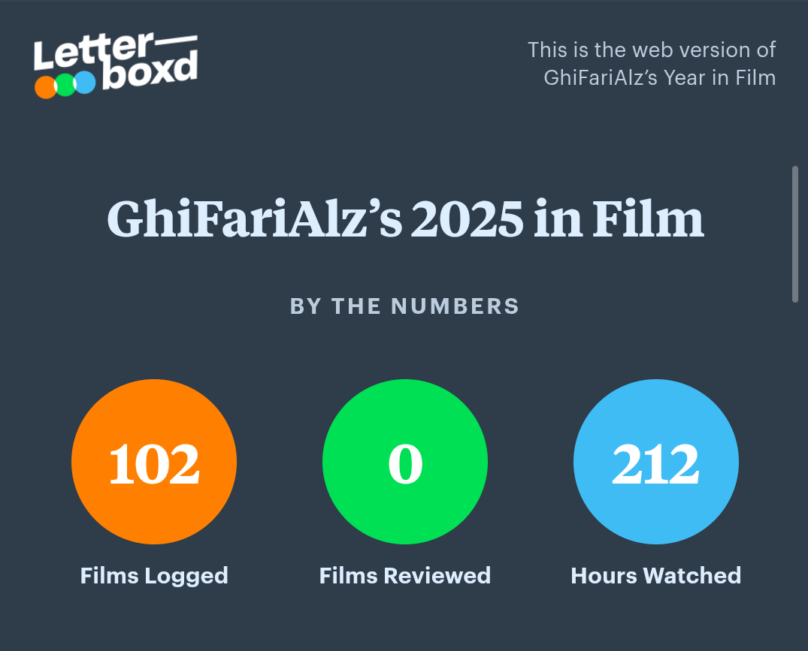
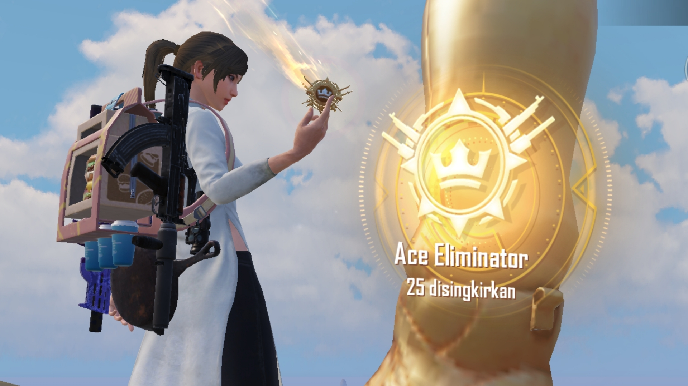
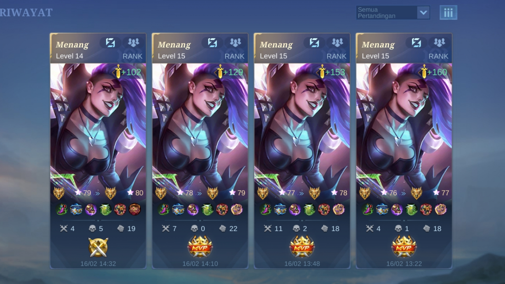

Mahasiswa Sistem Informasi yang memiliki minat dalam dunia film dan game.
Saya adalah mahasiswa Sistem Informasi yang memiliki minat di bidang teknologi, sekaligus hobi menganalisis alur film dan strategi permainan. Terbiasa berpikir taktis, baik saat mengerjakan project maupun saat menentukan rotasi zona di PUBG. Selalu berusaha menyelesaikan tugas tepat waktu, kecuali kalau lagi nonton film yang plot twist-nya bikin penasaran.
Chinephile
PUBG Mobile
Mobile Legend

Tersertifikasi nonton film sampai tamat walaupun ceritanya mulai aneh di tengah jalan. Ahli menebak plot twist sebelum kejadian dan debat panjang soal ending di grup chat. Spesialis maraton film sampai lupa waktu.

Berpengalaman dalam looting cepat, kabur elegan, dan berkata “SEKARAT!! SEKARAT!!” tepat sebelum kalah. Menguasai strategi zona biru dan teknik sembunyi di semak dengan penuh dedikasi. Chicken dinner itu bonus, yang penting gaya dulu.

Lulus ujian mental menghadapi draft random dan rekan tim yang tiba-tiba AFK. Ahli comeback dramatis dan menyalahkan ping saat keadaan tidak mendukung. Rank boleh naik turun, mental tetap stabil.